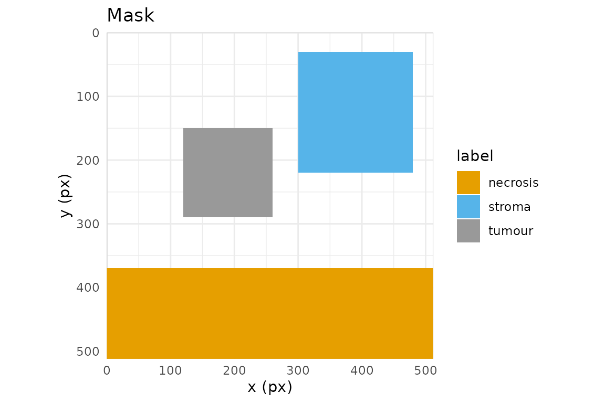

A mask is the artefact that turns hand-drawn regions into
something a segmentation or classification pipeline can consume: an
integer raster on the same pixel grid as the image, where each pixel
carries the identity of the region it belongs to. In hyperannotatR the
mask is the core deliverable, and at_mask() is the function
that produces it from an annot_roi, an
annot_layer, or a whole annot_project.
Three mask types
at_mask() writes one of three rasters, chosen with
type:
-
"binary"— a logical matrix:TRUEwherever any region covers a pixel,FALSEelsewhere. Use it for foreground/background problems (“is this pixel annotated at all?”). -
"labelled"— one distinct positive integer per ROI, assigned in draw order. Use it when individual objects must stay separable, e.g. instance segmentation where two adjacent tumour nests are different things. -
"multiclass"— one integer per label class, so every ROI sharing a label collapses to the same value. Use it for semantic segmentation, where you care about the class (“tumour”, “stroma”) and not the particular ROI.
Every mask is an annot_mask: a matrix with an attached
legend tibble (value, label,
layer, roi_id, n_px,
colour) plus level, dims,
mask_type and mask_metadata attributes; the
last records how to read the values (below). Read the legend back with
at_mask_legend().
Encoding metadata and alignment
attr(mask, "mask_metadata") is a versioned semantic
description. Schema 1 records encoding,
background, overlap, a grid
(dims in width/height order, level,
origin, and sampling stride), the full
codebook, and source provenance. Rasterisation
uses origin (0,0) and stride (1,1). A
nearest-neighbour preview records its sampled dimensions and stride plus
preview$parent_grid; its counts describe only sampled
pixels.
Public type names remain unchanged. Ordinary multiclass masks use
categorical encoding: category 3 belongs only to class
3. With overlap = "bitor", codes must be
distinct positive powers of two and background must be zero. A sample
3 then belongs to both class 1 and class
2. Legends, statistics, previews, polygonisation, and
display use this same membership rule. Composite display labels join
their class names with + and use the mean class colour. A
supplied global values map survives even if some classes
have no pixels; those classes retain zero counts. Empty legends recover
with typed columns.
Foreground codes cannot equal background. Binary rasterisation
rejects a requested background of 1, including for empty
masks. Other accepted binary backgrounds become effective
FALSE/0, matching the logical stored samples.
NPY imports remain integer arrays, including arrays declared binary.
Derivation uses each input’s own background and anatomy membership,
preserving the full state codebook. Declared grids and durable source
descriptors must agree. Queue entry IDs are retained as provenance but
need not match for two annotations of the same source; reopened-image
cache generations never establish source equality. Display names alone
are insufficient. Reader options are compared exactly, including atomic
types, names, dimensions, nesting, attributes and formal S4 identity.
Sidecars store options with
options_encoding = "typed-json-v2": a versioned, data-only
representation that also records each value’s formal-object flag.
Supported atomic/list S4 values recover without class constructors or an
installed class definition. Numeric options retain 17-digit precision.
Malformed or future option encodings fail. Older untyped JSON and typed
schema 1 cannot prove that all option structure survived (schema 1
omitted formal-object flags): these sources are marked
options_status = "legacy-json" and derivation requires an
explicit alignment assertion, including after re-export. Likewise,
options_inferred = TRUE records guessed legacy reader
options and cannot establish verified alignment. Any supplied inference
flag must be a single, non-missing logical value; omitting it leaves
explicitly recorded options unchanged. For standalone masks whose
registration you know, pass alignment = "assert" to
at_mask_derive(). This records an explicit registration
assertion without resampling. Different matrix dimensions always fail.
The default alignment = "legacy" only permits
unknown-source fallback when both masks have legacy metadata and records
legacy-assumed. Self-combination records
self-grid, without claiming an external source
registration.
The pixel-coverage contract
Rasterisation is only reproducible if the pixel/geometry relationship
is exact, so hyperannotatR pins it down. Pixel (i, j)
covers the half-open square [j-1, j) x [i-1, i), with
(0, 0) at the top-left corner of the top-left pixel; its
centre is therefore (j - 0.5, i - 0.5). With the default
touches = FALSE, a pixel is in the mask when its
centre lies inside the polygon. Boundary ties use the symbolic
sample (x + epsilon, y + epsilon^2) as epsilon
tends to zero from above; there is no finite coordinate shift. At each
centre y, edges are active on [minY, maxY) and sorted
crossing pairs fill [left, right). For rectangles, lower
edges count as inside and upper edges as outside. For the triangle
(0,0), (5,0), (5,5), the diagonal y = x counts
as inside: its five rows contain 5, 4, 3, 2, and 1 pixels, respectively.
Hole rings remove pixels by parity regardless of ring orientation, and
MultiPolygon components combine by union. Thin polygons without selected
centres produce an empty mask. Single and batched masks and both engine
choices share this centre-membership rule.
Points use their half-open containing cell: point (5,5)
selects matrix row 6, column 6, because its cell is
[5,6) x [5,6). Multipoints select the union of these cells.
Extraction uses the same support and reads the corresponding bounded
image tile. These boundary rules correct the earlier finite-shift
behavior, which selected row 5, column 5 for an integer-coordinate point
and could produce inconsistent diagonal polygon coverage.
All-touched masks and line rasterisation retain the selected engine’s behavior; engine equality is guaranteed for centre-based polygons and points.
The cleanest way to trust this is to compute a small case by eye.
Take a rectangle from (2, 2) to (5, 5) on a
10x10 grid:
r <- at_roi_rect(2, 2, 5, 5, label = "a")
m <- at_mask(r, "binary", dims = c(10, 10))
print(matrix(as.integer(m), 10, 10))
#> [,1] [,2] [,3] [,4] [,5] [,6] [,7] [,8] [,9] [,10]
#> [1,] 0 0 0 0 0 0 0 0 0 0
#> [2,] 0 0 0 0 0 0 0 0 0 0
#> [3,] 0 0 1 1 1 0 0 0 0 0
#> [4,] 0 0 1 1 1 0 0 0 0 0
#> [5,] 0 0 1 1 1 0 0 0 0 0
#> [6,] 0 0 0 0 0 0 0 0 0 0
#> [7,] 0 0 0 0 0 0 0 0 0 0
#> [8,] 0 0 0 0 0 0 0 0 0 0
#> [9,] 0 0 0 0 0 0 0 0 0 0
#> [10,] 0 0 0 0 0 0 0 0 0 0Rows and columns 3, 4 and 5 are set, and nothing else. The rectangle
spans x in [2, 5); the pixel-centre
x-coordinates that fall in that interval are 2.5, 3.5, 4.5,
i.e. columns 3, 4, 5. The centre at x = 5.5 (column 6) is
outside, and the lower edge at x = 2 is inside because
centre 2.5 > 2. The same reasoning on y
gives rows 3:5. A rectangle three pixels wide and three pixels high
covers exactly nine pixels, with no fencepost surprises.
touches: centres versus contact
touches = TRUE switches to a “does the polygon touch the
pixel at all” rule (GDAL ALL_TOUCHED=TRUE), which grows the
region by the fringe pixels a polygon merely clips. It matters when
edges cut through pixel interiors rather than running along the grid. A
rectangle with fractional bounds shows the contrast:
r2 <- at_roi_rect(2.5, 2.5, 4.5, 4.5, label = "a")
off <- matrix(as.integer(at_mask(r2, "binary", dims = c(8, 8), touches = FALSE)), 8, 8)
on <- matrix(as.integer(at_mask(r2, "binary", dims = c(8, 8), touches = TRUE)), 8, 8)
#> Registered S3 method overwritten by 'stars':
#> method from
#> st_interpolate_aw.stars sf
off
#> [,1] [,2] [,3] [,4] [,5] [,6] [,7] [,8]
#> [1,] 0 0 0 0 0 0 0 0
#> [2,] 0 0 0 0 0 0 0 0
#> [3,] 0 0 1 1 0 0 0 0
#> [4,] 0 0 1 1 0 0 0 0
#> [5,] 0 0 0 0 0 0 0 0
#> [6,] 0 0 0 0 0 0 0 0
#> [7,] 0 0 0 0 0 0 0 0
#> [8,] 0 0 0 0 0 0 0 0
on
#> [,1] [,2] [,3] [,4] [,5] [,6] [,7] [,8]
#> [1,] 0 0 0 0 0 0 0 0
#> [2,] 0 0 0 0 0 0 0 0
#> [3,] 0 0 1 1 1 0 0 0
#> [4,] 0 0 1 1 1 0 0 0
#> [5,] 0 0 1 1 1 0 0 0
#> [6,] 0 0 0 0 0 0 0 0
#> [7,] 0 0 0 0 0 0 0 0
#> [8,] 0 0 0 0 0 0 0 0With touches = FALSE only the pixels whose centres sit
inside the rectangle are kept; with touches = TRUE the
partially clipped border pixels join too. Prefer the default for
area-faithful masks, and touches = TRUE only when you must
not drop thin structures.
Overlap resolution
When two regions cover the same pixel, overlap decides
who wins. The ROIs are rasterised in draw order (ascending
z, then insertion):
lyr <- at_layer("regions")
lyr <- at_layer_add(lyr, at_roi_rect(1, 1, 5, 5, label = "a"))
lyr <- at_layer_add(lyr, at_roi_rect(3, 3, 7, 7, label = "b"))
matrix(as.integer(at_mask(lyr, "labelled", dims = c(8, 8), overlap = "last")), 8, 8)
#> [,1] [,2] [,3] [,4] [,5] [,6] [,7] [,8]
#> [1,] 0 0 0 0 0 0 0 0
#> [2,] 0 1 1 1 1 0 0 0
#> [3,] 0 1 1 1 1 0 0 0
#> [4,] 0 1 1 2 2 2 2 0
#> [5,] 0 1 1 2 2 2 2 0
#> [6,] 0 0 0 2 2 2 2 0
#> [7,] 0 0 0 2 2 2 2 0
#> [8,] 0 0 0 0 0 0 0 0
matrix(as.integer(at_mask(lyr, "labelled", dims = c(8, 8), overlap = "first")), 8, 8)
#> [,1] [,2] [,3] [,4] [,5] [,6] [,7] [,8]
#> [1,] 0 0 0 0 0 0 0 0
#> [2,] 0 1 1 1 1 0 0 0
#> [3,] 0 1 1 1 1 0 0 0
#> [4,] 0 1 1 1 1 2 2 0
#> [5,] 0 1 1 1 1 2 2 0
#> [6,] 0 0 0 2 2 2 2 0
#> [7,] 0 0 0 2 2 2 2 0
#> [8,] 0 0 0 0 0 0 0 0"last" (the default) lets the later-drawn region
overwrite; "first" keeps the earlier one;
"max" and "min" resolve by pixel value; and
"error" aborts the moment any two regions collide, which is
the safest choice when overlaps should never happen.
"bitor" keeps every membership instead of choosing a
winner. It is meant for multiclass masks whose class codes are distinct
powers of two: an overlapping pixel holds the bitwise OR of the codes,
so a pixel covered by a (1) and b (2) holds 3
and both classes stay recoverable with bitwAnd().
bits <- at_mask(lyr, "multiclass", dims = c(8, 8), values = c(a = 1L, b = 2L),
overlap = "bitor")
matrix(as.integer(bits), 8, 8)
#> [,1] [,2] [,3] [,4] [,5] [,6] [,7] [,8]
#> [1,] 0 0 0 0 0 0 0 0
#> [2,] 0 1 1 1 1 0 0 0
#> [3,] 0 1 1 1 1 0 0 0
#> [4,] 0 1 1 3 3 2 2 0
#> [5,] 0 1 1 3 3 2 2 0
#> [6,] 0 0 0 2 2 2 2 0
#> [7,] 0 0 0 2 2 2 2 0
#> [8,] 0 0 0 0 0 0 0 0
at_mask_legend(bits)[, c("value", "label", "n_px")]
#> # A tibble: 2 × 3
#> value label n_px
#> <int> <chr> <int>
#> 1 1 a 16
#> 2 2 b 16Masks from a project
On a real project the mask spans the image grid. The bundled example carries one layer of three labelled regions:
proj <- at_example_project()
mc <- at_mask(proj, type = "multiclass")
mc
#> <annot_mask> multiclass | 512 x 512 px | level 0
#> values: 3
#> # A tibble: 3 × 6
#> value label layer roi_id n_px colour
#> <int> <chr> <chr> <chr> <int> <chr>
#> 1 1 tumour regions NA 19600 #999999
#> 2 2 necrosis regions NA 72704 #E69F00
#> 3 3 stroma regions NA 34200 #56B4E9
at_mask_legend(mc)
#> # A tibble: 3 × 6
#> value label layer roi_id n_px colour
#> <int> <chr> <chr> <chr> <int> <chr>
#> 1 1 tumour regions NA 19600 #999999
#> 2 2 necrosis regions NA 72704 #E69F00
#> 3 3 stroma regions NA 34200 #56B4E9
table(as.integer(mc))
#>
#> 0 1 2 3
#> 135640 19600 72704 34200at_mask_stats() summarises each value — pixel counts,
area, fraction of the frame, bounding box and centroid — ready for a
report table:
at_mask_stats(mc)
#> # A tibble: 3 × 12
#> value label n_px area_px area_physical frac_total bbox_xmin bbox_ymin
#> <int> <chr> <int> <dbl> <dbl> <dbl> <dbl> <dbl>
#> 1 1 tumour 19600 19600 NA 0.0748 120 150
#> 2 2 necrosis 72704 72704 NA 0.277 0 370
#> 3 3 stroma 34200 34200 NA 0.130 300 30
#> # ℹ 4 more variables: bbox_xmax <dbl>, bbox_ymax <dbl>, centroid_x <dbl>,
#> # centroid_y <dbl>Writing masks and the legend sidecar
at_write_mask() writes an integer TIFF (16-bit by
default), and — because a bare integer raster is meaningless without a
key — a companion <path>.legend.json describing
it:
dir <- tempfile("masks-"); dir.create(dir)
path <- file.path(dir, "regions.tif")
at_write_mask(mc, path, overwrite = TRUE)
list.files(dir)
#> [1] "regions.tif" "regions.tif.legend.json"
cat(readLines(paste0(path, ".legend.json")), sep = "\n")
#> {
#> "mask_metadata": {
#> "schema_version": 1,
#> "status": "declared",
#> "encoding": "categorical",
#> "background": 0,
#> "overlap": "last",
#> "grid": {
#> "dims": [512, 512],
#> "level": 0,
#> "origin": [0, 0],
#> "stride": [1, 1]
#> },
#> "source": {
#> "entry_id": null,
#> "descriptor": {
#> "schema_version": 1,
#> "signature": {
#> "size": 526756,
#> "mtime": 1793113730
#> },
#> "files": null,
#> "path": "/home/runner/work/_temp/Library/hyperannotatR/extdata/example_tissue.png",
#> "backend": "raster",
#> "options": {
#> "schema_version": 2,
#> "node": {
#> "type": "list",
#> "data": [],
#> "s4": false,
#> "attributes": null
#> }
#> },
#> "options_identity": "580a0000000200040601000203000000001300000000",
#> "reader_contract": null,
#> "options_encoding": "typed-json-v2"
#> }
#> },
#> "codebook": [
#> {
#> "value": 1,
#> "label": "tumour"
#> },
#> {
#> "value": 2,
#> "label": "necrosis"
#> },
#> {
#> "value": 3,
#> "label": "stroma"
#> }
#> ]
#> },
#> "storage": null,
#> "annotatR_version": "0.3.0",
#> "created": "2026-10-27T15:10:33+0000",
#> "mask_type": "multiclass",
#> "level": 0,
#> "dims": [512, 512],
#> "source_project": "example",
#> "legend": [
#> {
#> "value": 1,
#> "label": "tumour",
#> "layer": "regions",
#> "roi_id": null,
#> "n_px": 19600,
#> "colour": "#999999"
#> },
#> {
#> "value": 2,
#> "label": "necrosis",
#> "layer": "regions",
#> "roi_id": null,
#> "n_px": 72704,
#> "colour": "#E69F00"
#> },
#> {
#> "value": 3,
#> "label": "stroma",
#> "layer": "regions",
#> "roi_id": null,
#> "n_px": 34200,
#> "colour": "#56B4E9"
#> }
#> ]
#> }The sidecar is self-describing. Its fields, printed above, include
the annotatR_version, the created timestamp,
the mask_type, the pyramid level, the raster
dims, the source_project, and the full
legend array (one object per value, mirroring the legend
tibble). The sidecar also contains mask_metadata schema 1.
NPY sidecars separately record storage$axes
(yx or xy) and storage$shape;
these describe the array on disk, while the metadata grid describes
logical image samples. For a transposed NPY export, read with
at_read_npy(..., transpose = TRUE). A mismatched explicit
orientation fails even when a square shape would conceal the error.
at_read_mask() recovers the declared NPY orientation
automatically. Any consumer can map pixel values back to labels without
touching R.
TIFF export accepts bits = 8L or bits = 16L
(the default) and preserves unsigned integer class codes in
[0, 255] or [0, 65535]. PNG export remains
8-bit only: values above 255 and all negative values reject before
writing. bits controls TIFF only. Both formats reject
fractional/nonfinite samples and out-of-range values before creating or
overwriting the destination. TIFF writing needs tiff or a
magick build with exact grayscale support; PNG needs the
latter. An unavailable lossless writer produces a capability error.
Single-choice arguments require a scalar: omitted defaults choose the
first documented value, while explicitly supplied vectors are
invalid.
Downstream consumption
A Python pipeline reads the TIFF and its legend directly — no R runtime, no bespoke format:
import json
import tifffile
mask = tifffile.imread("regions.tif") # integer array, image grid
with open("regions.tif.legend.json") as f:
legend = json.load(f)
value_to_label = {row["value"]: row["label"] for row in legend["legend"]}
tumour = mask == next(v for v, l in value_to_label.items() if l == "tumour")Reading masks back
Masks are not a dead end. at_read_mask() polygonises an
existing mask — hyperannotatR’s own output, or a
Cellpose/StarDist/QuPath raster — back into an editable
annot_layer, recovering labels from the sidecar when it is
present:
back <- at_read_mask(path)
vapply(back$rois, function(r) r$label, character(1))
#> [1] "tumour" "necrosis" "stroma"Recovery precedence is explicit arguments, embedded RDS metadata,
then sidecar. legend and level override the
corresponding fields of an optional metadata list. For
example, a known legacy bitfield can be imported with
metadata = list(encoding = "bitfield", overlap = "bitor")
and a supplied legend of its base bits. Overrides do not resample the
array. Legacy masks without sufficient encoding metadata default to
exclusive instance/categorical values and background zero, with
status = "legacy-default"; composite values missing from a
legacy legend fail instead of being guessed as bits. Signed
representable integer categories are valid. Corrupt dimensions,
noninteger samples, malformed legends, and unknown schema versions fail
explicitly. Sampled previews and translated grids cannot be polygonised
into editable ROIs; import the original-resolution mask with unit stride
and zero origin instead. Their sampled arrays remain available through
at_read_npy(), preview, and statistics APIs. TIFF masks
must be a single two-dimensional integer plane; fractional samples and
multiple planes are rejected before conversion. Raw TIFF import requires
tiff; it does not fall back to display grayscale
conversion. PNG import preserves unsigned 8/16-bit grayscale class
codes, including 65535, using a magick build that passes an
exact grayscale capability check. Palette, RGB, alpha-bearing, grayscale
tRNS transparency and other-depth PNGs reject before
polygonisation. A transparency key is rejected even if none of the
stored samples use that key.
connectivity = 8L (default) joins pixels that share a
corner or edge into one ROI. connectivity = 4L joins only
edge neighbours. Point-touching parts of an eight-connected region are
retained together as valid multipart geometry with the same pixel
membership. Connectivity must be a single finite whole number; missing,
fractional, other-valued or explicit vector arguments are invalid.
Finally, at_plot_mask() renders a mask with its legend
for a quick visual check:
at_plot_mask(mc)
Next, see the Interoperability vignette for GeoJSON, QuPath, and CSV exchange with other tools.